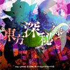

- Welcome to Touhou Wiki!
- Please register to edit. For assistance, check in with our Discord server or IRC channel.
File:Th145front.jpg
Jump to navigation
Jump to search


Size of this preview: 605 × 599 pixels. Other resolutions: 242 × 240 pixels | 1,435 × 1,421 pixels.
{kind=link}
Original file (1,435 × 1,421 pixels, file size: 953 KB, MIME type: image/jpeg)
File history
Click on a date/time to view the file as it appeared at that time.
| Date/Time | Thumbnail | Dimensions | User | Comment | |
|---|---|---|---|---|---|
| current | 16:59, 29 January 2019 |  | 1,435 × 1,421 (953 KB) | SaltyBucket (talk | contribs) | |
| 15:10, 11 April 2015 |  | 417 × 412 (75 KB) | HijirinMyouren (talk | contribs) |
- You cannot overwrite this file.
File usage
The following 65 pages uses this file:
- Byakuren Hijiri
- Embodiment of Scarlet Devil/Story/Prologue
- Fujiwara no Mokou
- Hakurei Shrine
- Hata no Kokoro
- Ichirin Kumoi
- Imperishable Night/Spell Cards
- Kasen Ibaraki
- Koishi Komeiji
- Lotus Land Story/Characters
- Mamizou Futatsuiwa
- Marisa Kirisame
- Mononobe no Futo
- Mystic Square/Story/Reimu's Extra
- Nitori Kawashiro
- Reimu Hakurei
- Reisen Udongein Inaba
- Shining Needle Castle
- Shinmyoumaru Sukuna
- Story of Eastern Wonderland/Translation/Manual
- Sumireko Usami
- Touhoudex/EX Alice
- Toyosatomimi no Miko
- Unzan
- Urban Legend in Limbo
- Urban Legend in Limbo/Music
- Urban Legend in Limbo/Story
- Urban Legend in Limbo/Story/Byakuren's Scenario
- Urban Legend in Limbo/Story/Byakuren's Script
- Urban Legend in Limbo/Story/Demo Scenario
- Urban Legend in Limbo/Story/Futo's Scenario
- Urban Legend in Limbo/Story/Futo's Script
- Urban Legend in Limbo/Story/Ichirin's Scenario
- Urban Legend in Limbo/Story/Ichirin's Script
- Urban Legend in Limbo/Story/Kasen's Scenario
- Urban Legend in Limbo/Story/Kasen's Script
- Urban Legend in Limbo/Story/Koishi's Scenario
- Urban Legend in Limbo/Story/Koishi's Script
- Urban Legend in Limbo/Story/Kokoro's Scenario
- Urban Legend in Limbo/Story/Kokoro's Script
- Urban Legend in Limbo/Story/Mamizou's Scenario
- Urban Legend in Limbo/Story/Mamizou's Script
- Urban Legend in Limbo/Story/Marisa's Scenario
- Urban Legend in Limbo/Story/Marisa's Script
- Urban Legend in Limbo/Story/Miko's Scenario
- Urban Legend in Limbo/Story/Miko's Script
- Urban Legend in Limbo/Story/Mokou's Scenario
- Urban Legend in Limbo/Story/Mokou's Script
- Urban Legend in Limbo/Story/Nitori's Scenario
- Urban Legend in Limbo/Story/Nitori's Script
- Urban Legend in Limbo/Story/Reimu's Scenario
- Urban Legend in Limbo/Story/Reimu's Script
- Urban Legend in Limbo/Story/Reisen's Scenario
- Urban Legend in Limbo/Story/Reisen's Script
- Urban Legend in Limbo/Story/Shinmyoumaru's Scenario
- Urban Legend in Limbo/Story/Shinmyoumaru's Script
- Urban Legend in Limbo/Story/Sumireko's Scenario
- Urban Legend in Limbo/Story/Sumireko's Script
- Urban Legend in Limbo/Translation
- Urban Legend in Limbo OST
- Urban Legend in Limbo OST/Uni Akiyama's Comments
- Urban Legend in Limbo OST/ZUN's Comments
- Urban Legend in Limbo OST 2
- Template:Navbox SA
- Template:Navbox ULiL
{kind=link}
{kind=link}
{kind=link}
{kind=link}
{kind=link}
{kind=link}
{kind=link}
{kind=link}